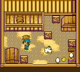
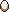
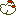

GALINHAS

O Galinheiro está a direita do celeiro. Dentro você pode ter quatro galinhas. As galinhas nunca vão para fora, embora você possa pega-las e coloca-las no chão. Você pegará galinhas um bocado de vezes, especialmente quando elas ficam no seu caminho quando você está tentando colocar forragem na caixa de ração.
Apenas se lembre que cada espaço na caixa (da esquerda pra direita) são reservados para cada galinha. Por exemplo, se você tem duas galinhas (primeira e segunda) e você coloca comida em dois espaços no lado direito da caixa de ração (para terceira e quarta galinhas), suas galinhas não serão alimentadas desde que elas só comem no primeiro espaço e segundo espaço na caixa de ração.
Quando as galinhas estão saudaveis, elas botarão ovos todos os dias. Você pode pega-las apertando o botão "A" e então jogalos dentro da caixa de entrega que fica no canto inferior esquerdo. Se você errar, você terminará com um ovo quebrado e sem nenhum lucro. Se as galinhas ficam tristes, você terá que alimenta-las por 3 dias.
Depois desse tempo as galinhas ficarão felizes novamente e você estará apto a coletar ovos.
Se Maria dizer uma má sorte pra você, então suas galinhas não botarão ovos no dia seguinte. Você não tem que esperar por 3 dias para eles se tornarem saudaveis de novo; os ovos voltarão um dia depois de sua má sorte.
Ao invés de vender ovos, você pode coloca-los para chocar para ter mais galinhas. Apenas coloque ovos dentro da incubadora que fica no canto inferior direito e em poucos dias você terá um pintinho. Pintinhos são tão pequenos que você não precisa alimenta-los. Leva muito tempo para um pinto se tornar uma galinha.
| Ovo >> | 5 dias >> | Pintinho >> | 18 dias >> | Galinha |
Antes de você comprar sua primeira galinha, você tem que ter ao menos 5 sacos de gramas plantados. O dono da Loja de Animais não vendera galinhas a você até te-las. Depois disso, você pode comprar galinhas dele por 500G. Se você comprar uma galinha e depois chocar as outras três, você terá economizado dinheiro, mas leva algum tempo para que pintinhos cresçam e virem galinhas adultas. Se você quiser vender uma galinha, vá para sua loja, selecione a galinha que você quer vender (aperte "CIMA" ou "BAIXO"), e ele pagará 500G por ela.
| Ovo >> | 70G |
| Pintinho >> | Não está para venda |
| Galinha >> | 500G |